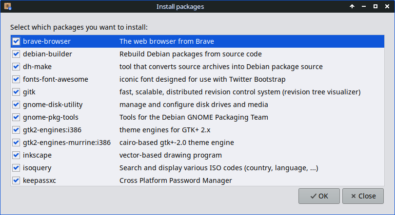
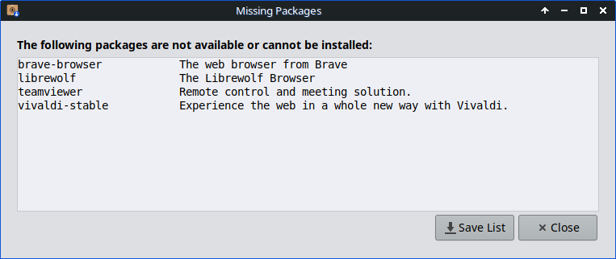
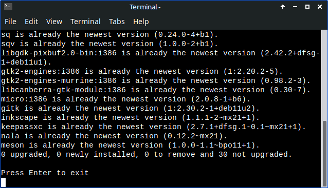

User Installed Packages Help
This application is intended to facilitate the reinstallation of packages that the user has added to the default installation.
It can display a list of packages manually installed by the user. This list can be saved in a simple text file.
Furthermore, the application allows to load a saved list of packages. The loaded package list is displayed for selection. The user can now select which packages to install.
Especially after a new installation of the system, it is easy to select the desired packages for installation from an existing list of user-installed packages.
There are two options to choose from:
- quickly and easily create a list of those packages
- use that list in another location to review and reinstall those packages, if still available

Create a list of user installed packages
- A list of user installed packages is displayed.
- Note: Packages of installed Linux kernels or NVIDIA graphics driver will not be listed.

- Press [Save List] and select the location to save the package list.
Open a previously saved list to install selected packages
- Select the package list you wish to install.
- The package list will be displayed.
- Uncheck any packages in the list you do not wish to install.
- A notification is provided for any missing packages.

- Press [OK] and the selected packages will be installed if still available.
Unavailable packages will be listed
- Packages unavaible or cannot be installed will be listed.
- Press [Save List] and select location to save the list of missing packages.

Packages available with be installed
- The installation process is started within a new terminal window.
- Authentication to perform installtion is required.
- Confirmation to perform the installtion is requested. Press [N] to cancel installtion.

- To close the terminal window after the installtion process finshed press [Enter].
Version: 23.03.10
Last updated: Sun, 26 Mar 2023 15:22:27 -0500